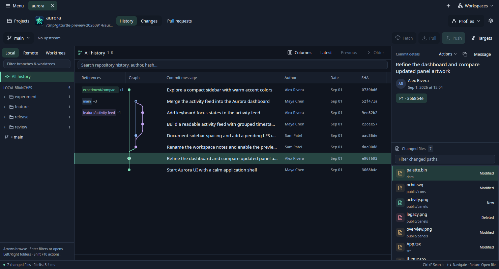
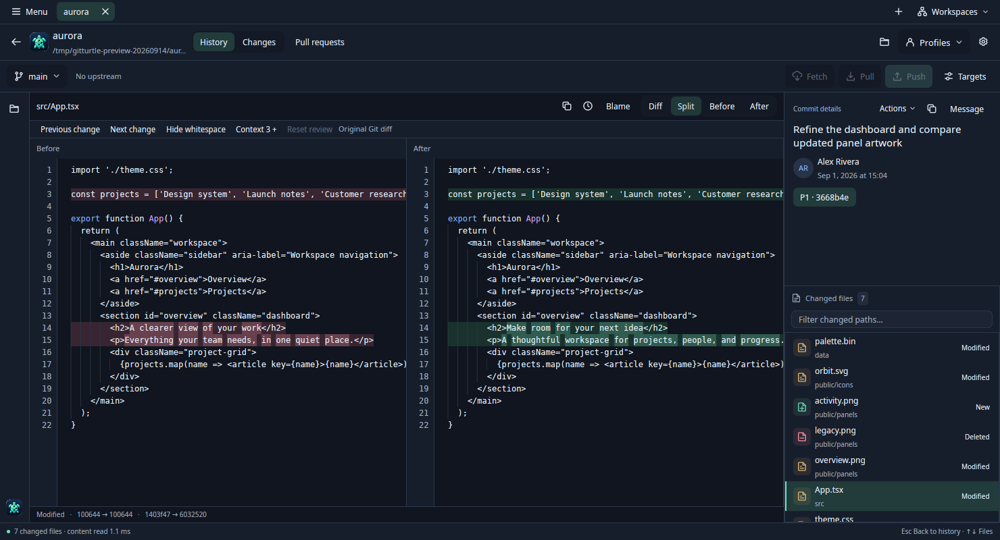
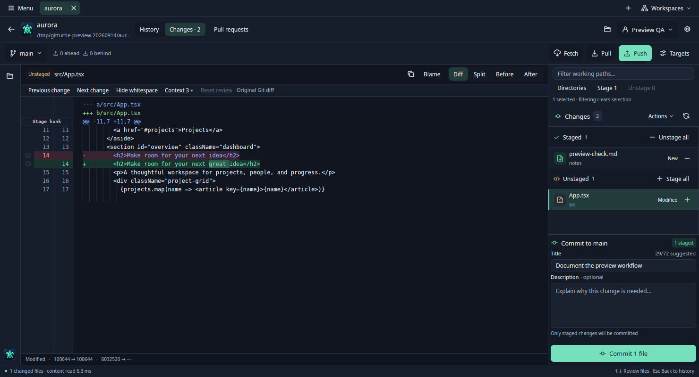
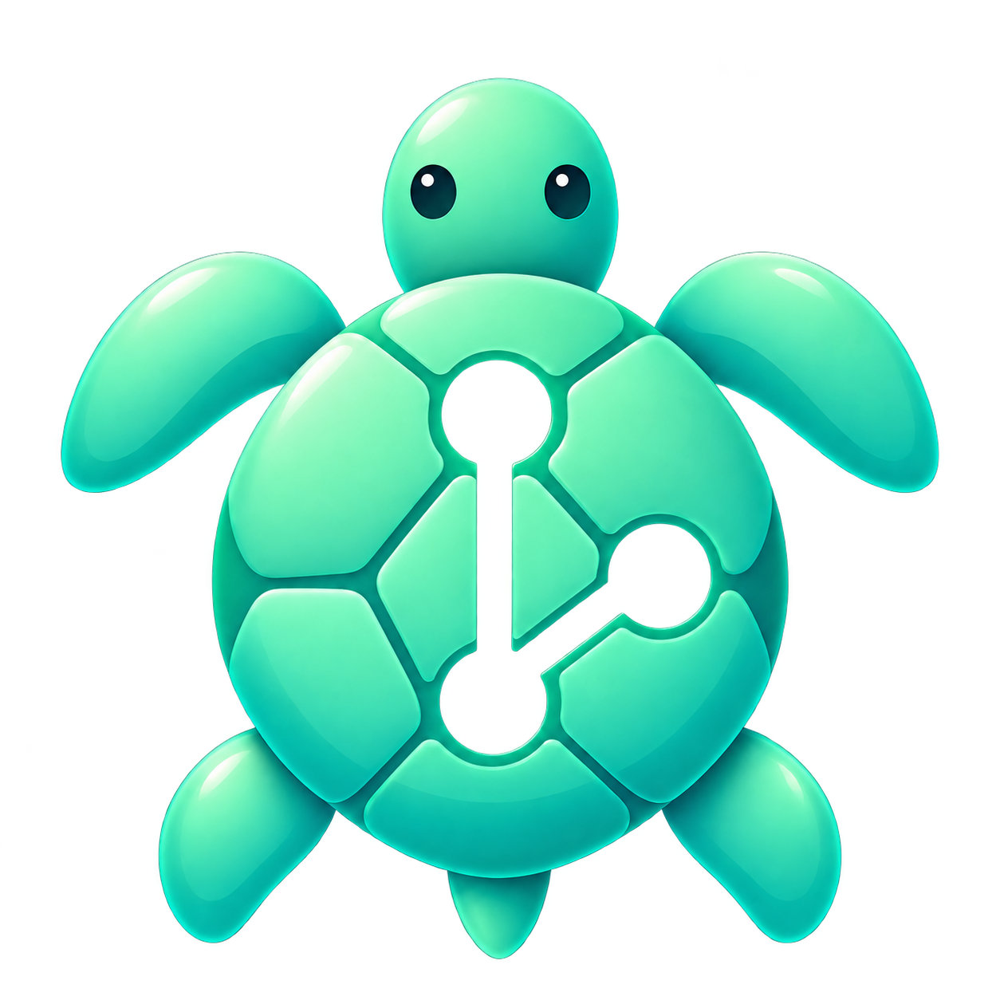

{kind=link}
Find your place
Explore the graph, filter branches, and search local history. Select a commit to see exactly which files changed.
A fast, open source Git client for big projects and busy worktrees.
Open your history. Get to the changes. Keep moving.
macOSLinuxFree and open source

BUILT FOR BIGGER PROJECTS
GitTurtle started with Fernando’s own projects: 60 GB across many worktrees. Waiting for repositories to load and commits to open kept breaking his flow. He built GitTurtle to make those everyday moments feel quick again.
Explore the graph, filter branches, and search local history. Select a commit to see exactly which files changed.
Read unified or split diffs. Compare images visually. Go back to the history you were reading when you’re done.
Stage files, hunks, or changed lines. Write your message with a separate draft for each worktree.
A CLOSER LOOK
Three moments in the native app.
Choose a view to explore.
Choose a commit, inspect its files, then open a file to compare. Your history context stays close.
View full size
Compare Before and After side by side, with changed text highlighted. Switch to Diff for a unified patch, or inspect either version on its own.
View full size
Review the edits still in progress alongside the files you’ve staged. Compose a commit from the staged changes; each worktree keeps its own draft.
View full sizeActual development builds; sample repositories and authors. Screenshot and validation notes
Made for your desktop, with keyboard navigation, light and dark themes, and comfortable text sizes you can adjust.
Move between repository and worktree tabs. Save workspaces and return to the projects you’re working on.
Browsing reads local history. Staging, commits, fetch, pull, and push happen through your explicit actions.
COME TAKE A LOOK
GitTurtle is an early preview, available to build from source. Try it, tell us what feels good, and help shape what comes next.

SMALL TURTLE. SHARED JOURNEY.
Free to use, inspect, and improve. GitTurtle is open source under the MIT license. Bring an idea, report a bug, or help shape what comes next.
{kind=link}
{kind=link}